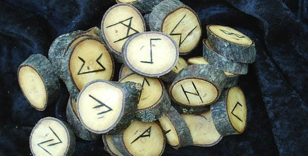

Главная
Приветствую вас на своём сайте! Меня зовут Сильвия и я занимаюсь гаданиями на таро и на скандинавских рунах, а также практикую и изучаю другие гадательные и магические системы. На этом сайте вы можете связаться со мной для консультации по своим жизненным вопросам, а также в целях обучения. Раздел Статьи создан в качестве личного блога и будет постепенно наполняться.
Желаю увлекательного путешествия!
Новости
30 ноября - семинар-тренинг "Руны как гадательная система"
Приглашаем всех желающих посетить семинар-тренинг в Минске, посвящённый теории и практике гадания на скандинавских рунах! Семинар интересен как тем, кто только начинает постигать руническое искусство, так и тем, кто желает отточить своё мастерство на практике.
Программа занятия:
- Руны в контексте северной магической традиции;
- Способы изготовления собственного рунического набора;
- Значения рун Старшего Футарка;
- Варианты раскладов;
- Практика гадания на рунах.
Дата проведения - 30 ноября. Место проведения - Минск. Длительность семинара-тренинга - 4 часа (13:00-17:00).
Записаться и задать все организационные вопросы вы можете по тел.: +37525 7731918, +37529 3410857 и через лс http://vk.com/silviadivina
